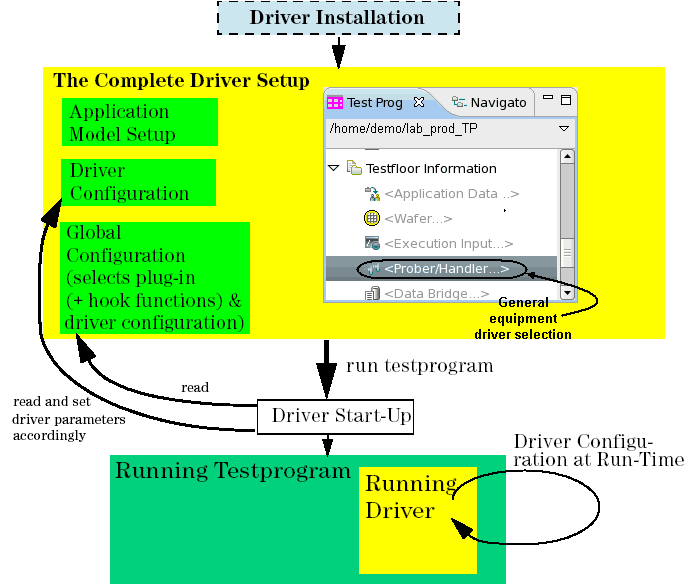

Basic Driver Usage
This section describes the basic tasks of handling equipment drivers. You will learn what these tasks are, when they must be performed, and how they are performed in principle.
All tasks which can be carried out by the (production) test engineers and production testfloor personnel are described in detail in the following chapters.
Driver installation will be performed by Advantest support personnel.
The figure below illustrates the basic driver usage. Each of the components of this usage diagram is explained briefly in the sections that follow. References which lead you directly to the detailed usage description are provided in the respective sections.
